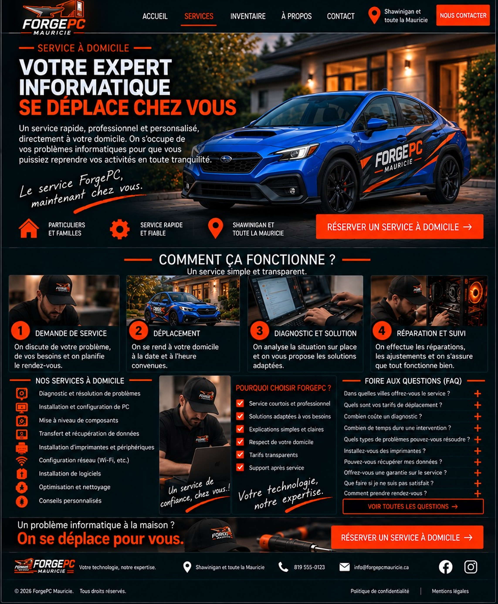
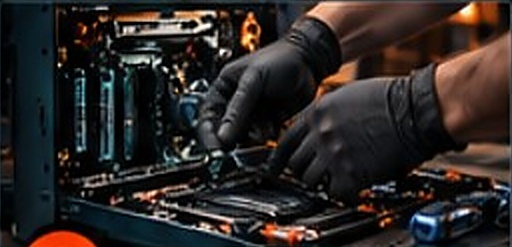
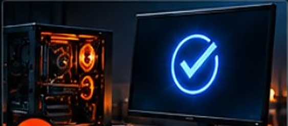

Un service rapide, professionnel et personnalisé, directement à votre domicile.
Un processus simple et transparent.
On discute de votre problème, de vos besoins et on planifie le rendez-vous.
On se rend à votre domicile à la date et à l’heure convenues.

On analyse la situation sur place et on vous propose les solutions adaptées.

On effectue les réparations, les ajustements et on s’assure que tout fonctionne bien.
Un problème informatique à la maison ?